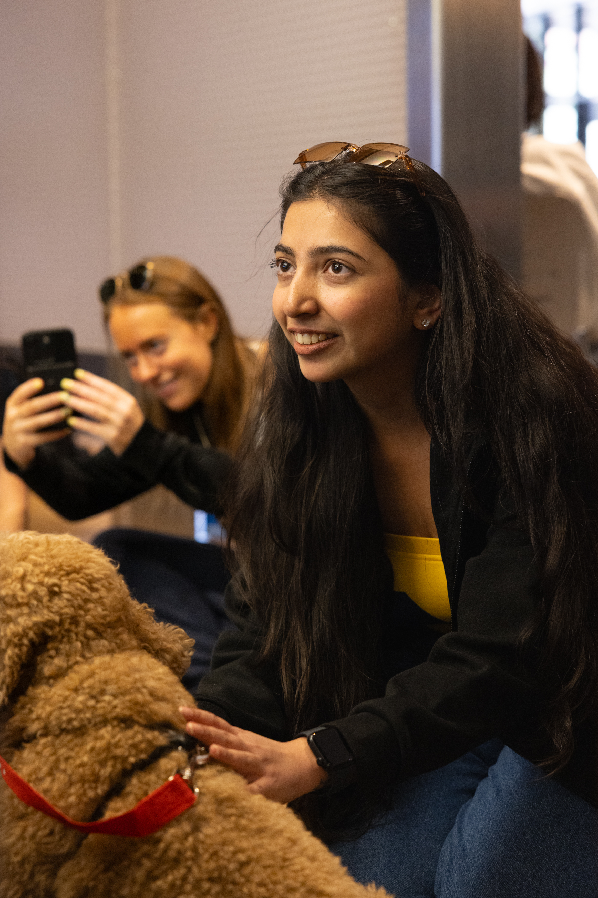
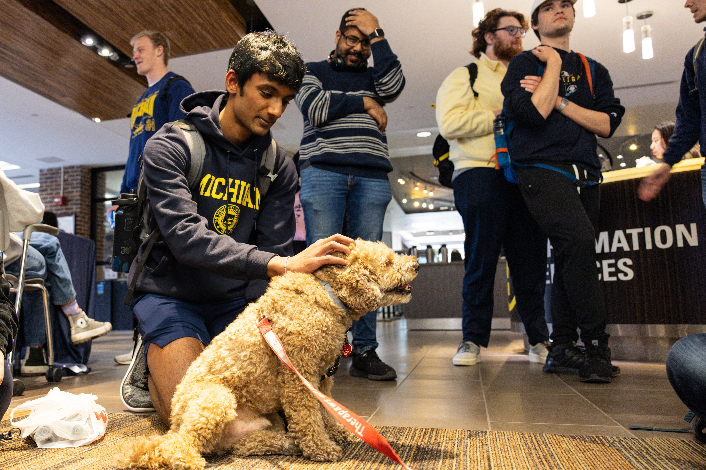

Keep the Project Moving Responsibly
Active project work requires regular communication, careful documentation, and a willingness to adapt while keeping the partner's goals and community needs at the center.
Practices for Active Project Work
- Track progress: Review milestones regularly and identify risks before they become larger problems.
- Communicate with the partner: Share clear updates, questions, and decisions at the agreed frequency.
- Document the work: Keep organized notes, files, research findings, and decision records.
- Use feedback: Ask for input early enough to revise the work before final delivery.
- Adapt ethically: Revisit assumptions and adjust the plan when new information or community concerns emerge.
Stay Connected and Support Your Well-Being
Engaged learning can be demanding. Make time to reflect with teammates, recognize progress, take appropriate breaks, and ask instructors or ELO staff for support when challenges affect the team or partner relationship.

Connecting with others and taking restorative breaks can help students return to project work with greater focus.

Community activities can support well-being and remind team members that they do not have to manage difficult work alone.